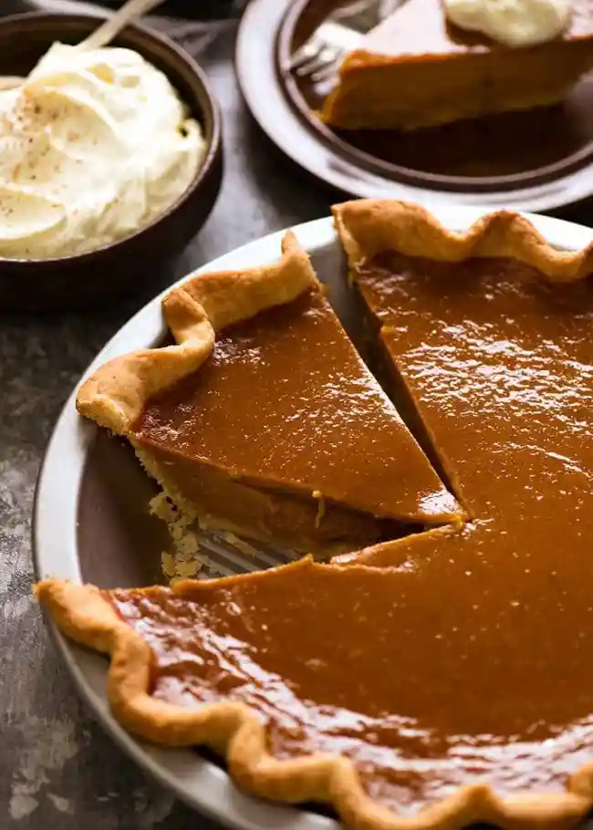

Pumpkin Pie

Pumpkin pie is a classic American dessert that is especially popular during the fall and Thanksgiving season. It is a type of pie made from a spiced pumpkin-based custard filling, usually baked in a pastry crust.
Pumpkin pie is typically served at room temperature or chilled. When sliced, the pie reveals its luscious, deep-orange filling, adorned with a layer of creamy whipped cream. The aroma of spices wafts through the air, inviting anyone nearby to indulge in a delightful autumnal treat.
Ingredients
- 1 (9 inch) unbaked pie crust
- 1 (16 ounce) can pumpkin puree
- 1 (14 ounce) can sweetened condensed milk
- 2 large eggs
- 1 teaspoon pumpkin pie spice
Steps
- Gather all ingredients
- Preheat the oven to 425 degrees F (220 degrees C).
- Fit pie crust into a 9-inch pie dish and place it on a baking sheet.
- Combine pumpkin puree, condensed milk, eggs, and pumpkin pie spice in a large bowl; mix until combined.
- Pour mixture into the pie crust.
- Bake in the preheated oven for 15 minutes. Reduce heat to 350 degrees F (175 degrees C) and continue to bake until filling is set, 35 to 40 minutes.
- Remove from the oven, set on a wire rack, and cool completely before serving.
- Enjoy!
Return to main page